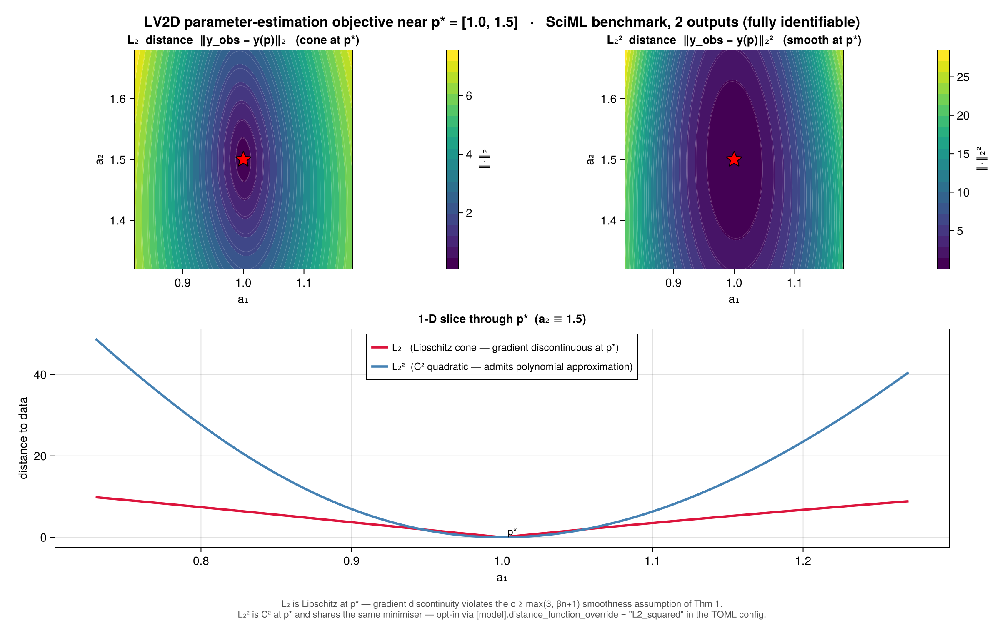

ODE Parameter Estimation
Parameter estimation for dynamical systems is the workload that shaped much of Globtim's design. Given a time series sampled from an ODE at unknown parameters, recover the parameters by minimising the distance between the simulated and the observed trajectories. The resulting landscape is expensive (every evaluation is an ODE solve), frequently multimodal, and sometimes not even differentiable at its own minimiser — which is what makes it a useful stress test for a polynomial-approximation method.
The objectives themselves live in the companion package DynamicObjectives.jl. They are documented here, alongside Globtim, because the shape of these landscapes bears directly on three Globtim topics: the smoothness hypothesis behind the global-capture theorem (see Core Algorithm), the choice of distance function, and when adaptive subdivision is required rather than optional.
The problem
Standard optimizers find one local minimum from a given start. For ODE fitting that is rarely enough: the objective can have many basins, symmetry-induced duplicate minimisers (from parameters that are only locally identifiable), and whole regions where the solver diverges. Globtim's question — what are all the local minimisers on this box? — is the question parameter estimation actually asks, since a non-identifiable model has a set of equally good answers and you want the whole set.
What DynamicObjectives provides
29 benchmark ODE models, each of which:
- Defines an ODE system — symbolic representation via ModelingToolkit.jl
- Generates synthetic data — a time series from true parameters, optional noise
- Creates an objective function — the error between simulated and reference trajectories
- Handles failures gracefully — returns
Infon solver failure, so optimization never throws
| Difficulty | Models | Parameters |
|---|---|---|
| Easy | Lotka-Volterra 2D (v1, v2, v3, 2-output, SciML) | 2 params |
| Medium | LV 3D/4D, DAISY, FHN 2-out, Goodwin 3D, RMA, LV2D reparam | 3-4 params |
| Medium-Hard | LV 4D Constrained, Simple 1D, Coupled LV2D | 1-4 params |
| Hard | FHN, Goodwin 4D, Lorenz, Rossler, identifiability tests | 1-4 params |
| Very Hard | Generalized Lotka-Volterra 4D | 20 params |
Model Catalog has the full table: function names, state and output counts, system type, and which models need a solver timeout.
Robust error handling
- Returns
Infon failure — no exceptions escape into the optimizer - Timeout mechanism — keeps a stiff or diverging solve from stalling a grid sweep
- Multiple distance metrics — L1, L2, log-L2 norms
Flexible data generation
- Synthetic time series with configurable sampling
- Optional noise injection for robustness testing
- Full or partial observability — 1–4 measured outputs
Display infrastructure
Readable output for models, parameters, and results:
display_model_summary(model)
display_parameters(param_names, values)
display_time_series(data)Installation
DynamicObjectives is not registered; install it from its repository alongside Globtim:
pkg> add Globtim HomotopyContinuation
pkg> add https://github.com/gescholt/DynamicObjectives.jlFor development against a local checkout:
using Pkg
Pkg.develop(path = "/path/to/DynamicObjectives")Or, as a path source in a Project.toml:
[deps]
DynamicObjectives = "a7860e71-583f-4874-99b9-9df52d7a8e5c"
[sources]
DynamicObjectives = {path = "../DynamicObjectives"}Quick start
using DynamicObjectives
# 1. Define an ODE system
model, params, states, outputs = define_lotka_volterra_2D_model_v3()
# 2. Set up the parameter estimation problem
p_true = [1.0, 1.0]
ic = [1.0, 1.0]
time_interval = [0.0, 10.0]
numpoints = 25
# 3. Create objective function
error_func = make_error_distance(
model, outputs, ic, p_true, time_interval, numpoints,
L2_norm, first, nothing;
return_inf_on_error = true,
eval_timeout = 10.0
)
# 4. Test at true parameters
@assert error_func(p_true) < 1e-6 # Should be ~0error_func is an ordinary Vector{Float64} -> Float64 callable, so it drops straight into the Globtim workflow of Getting Started in place of a hand-written objective.
Because a misconfigured objective returns Inf rather than throwing, it is possible to optimize a function that is Inf everywhere and get a plausible-looking result. Assert isfinite(error_func(p_true)) before running anything expensive.
Distance metrics: L₂ vs L₂²
The choice of distance function shapes the landscape near p_true. The default L2_norm is Lipschitz but not differentiable at the minimum (a cone, so the gradient jumps); switching to L2_squared gives a C² quadratic basin at the same minimiser.

The 1-D slice (bottom) makes the distinction sharp: L2_norm is V-shaped at p*, while L2_squared is U-shaped. This matters for Globtim's approximation guarantee — Thm 1 requires c ≥ max(3, βn+1) continuous derivatives of the objective, which L2_norm violates at the minimum and L2_squared satisfies.
Opt in per experiment via the TOML config:
[model]
distance_function_override = "L2_squared"Available metrics: L2_norm (default), L2_squared, log_L2_norm. The figure was generated by examples/figures/l2_vs_l2squared.jl in the DynamicObjectives repository.
Contents
- Model Catalog — all 29 models with configurations and recommended testing sequences
- Glued Objectives — higher-dimensional test problems with known critical-point sets, via Cartesian-product gluing
The docstring-level API reference for DynamicObjectives lives on that package's own site: DynamicObjectives.jl API Reference.